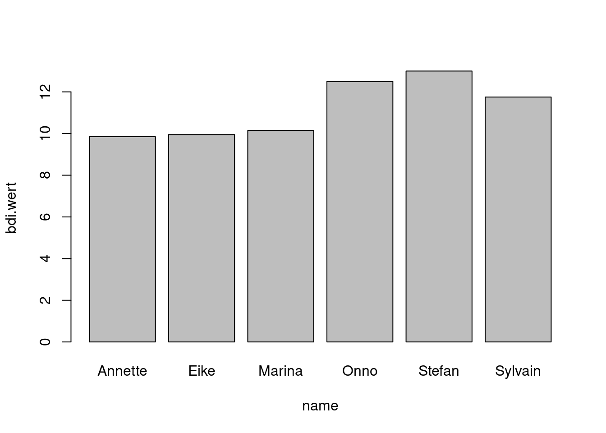
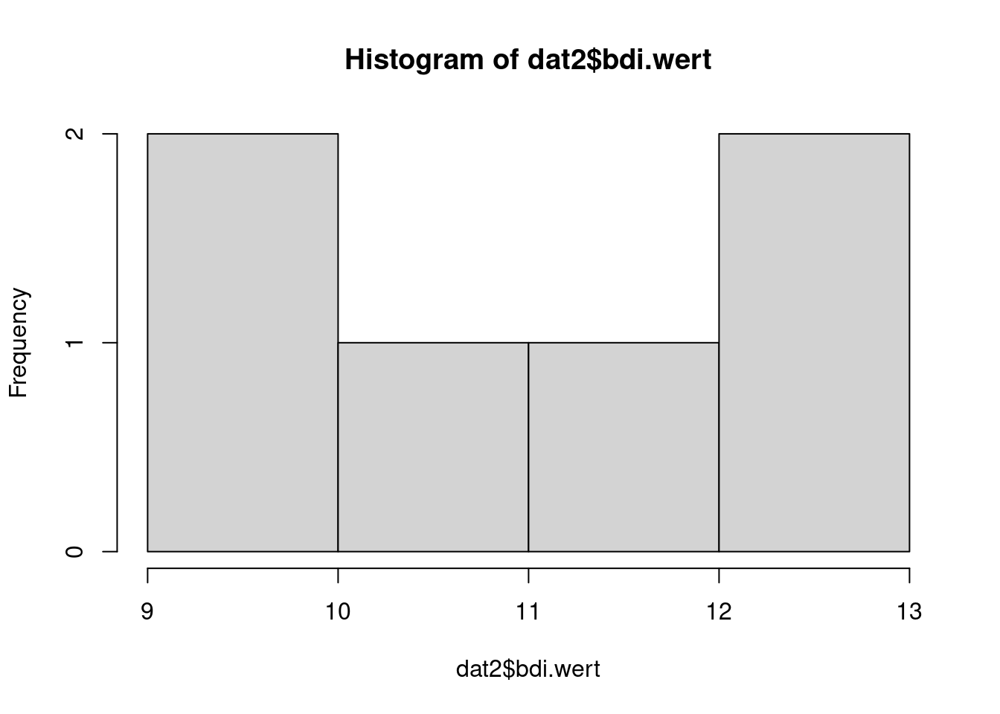
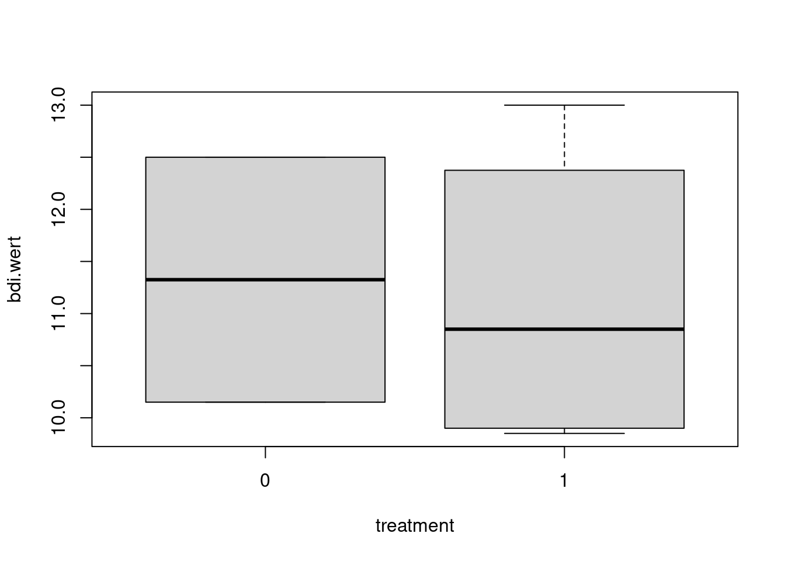
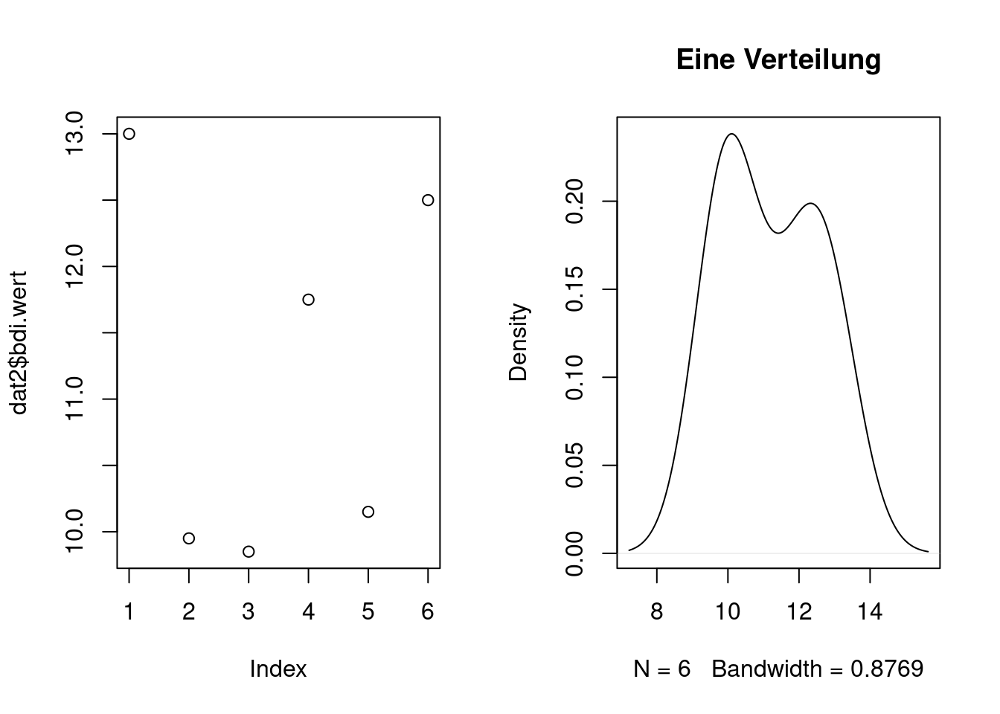

ID <- c(89045, 43678, 88475, 69781, 88766, 67743)
name <- c("Onno", "Stefan", "Sylvain", "Annette", "Marina", "Eike")
geschlecht <- c("m","m","m","w","w","m")
treatment <- c(0,1,1,1,0,1)
bdi.wert <- c(12.5,13,11.75,9.85,10.15,9.95)
daten <- data.frame(ID, name, geschlecht, treatment, bdi.wert, stringsAsFactors=FALSE)Data Frames, Listen und Grafiken in R
1. Datensätze: data.frames
Ein data.frame kann als eine spaltenweise Aneinanderreihung verschiedener Vektoren verstanden werden. Jeder einzelne Vektor kann dabei, wie gehabt, nur Elemente derselben Klasse enthalten; der data.frame selbst kann jedoch Vektoren unterschiedlicher Klasse enthalten. Im folgenden Beispiel wird ein data.frame aus zwei character- und drei numerischen Vektoren erzeugt:
Um sich einen Überblick über den soeben angelegten data.frame zu verschaffen, sind folgende Befehle nützlich:
- Die ersten Zeilen des Datensatzes werden ausgegeben:
head(daten) ID name geschlecht treatment bdi.wert
1 89045 Onno m 0 12.50
2 43678 Stefan m 1 13.00
3 88475 Sylvain m 1 11.75
4 69781 Annette w 1 9.85
5 88766 Marina w 0 10.15
6 67743 Eike m 1 9.95- Die Struktur des Datensatzes wird ausgegeben:
str(daten)'data.frame': 6 obs. of 5 variables:
$ ID : num 89045 43678 88475 69781 88766 ...
$ name : chr "Onno" "Stefan" "Sylvain" "Annette" ...
$ geschlecht: chr "m" "m" "m" "w" ...
$ treatment : num 0 1 1 1 0 1
$ bdi.wert : num 12.5 13 11.75 9.85 10.15 ...- Eine Zusammenfassung der Daten wird ausgegeben:
summary(daten) ID name geschlecht treatment
Min. :43678 Length:6 Length:6 Min. :0.0000
1st Qu.:68252 Class :character Class :character 1st Qu.:0.2500
Median :79128 Mode :character Mode :character Median :1.0000
Mean :74581 Mean :0.6667
3rd Qu.:88693 3rd Qu.:1.0000
Max. :89045 Max. :1.0000
bdi.wert
Min. : 9.85
1st Qu.:10.00
Median :10.95
Mean :11.20
3rd Qu.:12.31
Max. :13.00 - Welche Eigenschaften hat ein Objekt “data.frame”?
class(daten)[1] "data.frame"mode(daten)[1] "list"Auf zwei Besonderheiten soll hier kurz eingegangen werden:
- Warum hat das Objekt
datenzwar die Klassedata.frame, aber den Moduslist? Der Grund ist, dass in R data.frames “Spezialfälle” von Listen sind, genauso wie man einen Skalar als “Spezialfall” eines Vektors verstehen kann. In R dürfen Listen beliebig viele Elemente beliebigen Typs enthalten. data.frames dürfen mehrere Vektoren gleicher Länge, aber unterschiedlichen Typs (bzw. unterschiedlicher Klasse) enthalten. Ein data.frame ist also eine “eingeschränkte” Liste. - Was bedeutet “stringsAsFactors”? Wird ein data.frame konstruiert, der sich (teilweise) aus character-Variablen zusammensetzt, werden diese in R standardmäßig wie Faktoren behandelt. Das ist dann sinnvoll, wenn diese character-Variablen (wie hier) im Grunde nur Gruppierungsvariablen sind (hier: male, female). In SPSS gibt es für Gruppierungsvariablen die Skalendefinition “nominal”. Typischerweise werden solche Variablen als unabhängige Variablen in Varianzanalysen eingesetzt. Unter “echten” character-Variablen könnte man sich etwa die Freitextantworten in Fragebögen vorstellen. “stringsAsFactors” besagt also: “Soll R diese Variablen wie Faktoren behandeln oder wie echte character-Variablen?”
Die Variablen Treatment und Geschlecht könnten auch Faktoren werden (was in der Regel aber eigentlich nicht nötig ist):
daten$geschlecht <- as.factor(daten$geschlecht)
daten$treatment <- as.factor(daten$treatment)
str(daten)'data.frame': 6 obs. of 5 variables:
$ ID : num 89045 43678 88475 69781 88766 ...
$ name : chr "Onno" "Stefan" "Sylvain" "Annette" ...
$ geschlecht: Factor w/ 2 levels "m","w": 1 1 1 2 2 1
$ treatment : Factor w/ 2 levels "0","1": 1 2 2 2 1 2
$ bdi.wert : num 12.5 13 11.75 9.85 10.15 ...1.1 Zusammenführen von data.frames (merging)
Nehmen wir an, wir hätten nun einen weiteren data.frame, der die Nachnamen einiger Studienteilnehmer*innen enthält:
daten2 <- data.frame(
ID = c(43678, 88475, 88766, 89045),
nachname = c("Tegemann", "Laffont", "Brandner",
"Schreiner"), stringsAsFactors = FALSE)
daten2 ID nachname
1 43678 Tegemann
2 88475 Laffont
3 88766 Brandner
4 89045 Schreiner…und möchten diesen nun mit unseren Daten zusammenführen, dann geht das sehr flexibel mit der Funktion merge(). merge() verknüpft die Datensätze automatisch über Spalten in den beiden Datensätzen, die gleich benannt sind, in unserem Beispiel die Spalte ID:
dat <- merge(daten, daten2, all=TRUE)
dat ID name geschlecht treatment bdi.wert nachname
1 43678 Stefan m 1 13.00 Tegemann
2 67743 Eike m 1 9.95 <NA>
3 69781 Annette w 1 9.85 <NA>
4 88475 Sylvain m 1 11.75 Laffont
5 88766 Marina w 0 10.15 Brandner
6 89045 Onno m 0 12.50 SchreinerSind die Spalten mit den Schlüsselvariablen nicht gleich benannt kann man im by.x-Argument spezifizieren, wie die Variable im ersten Datensatz heißt und im by.y-Argument, wie sie im zweiten Datensatz heißt. Heißen mehrere Variablen in beiden Datensätzen gleich und man möchte nur eine dieser gleichnamigen Variablen zur Verknüpfung verwenden, spezifiziert man diese im by-Argument:
dat <- merge(daten, daten2, by="ID", all=TRUE)
dat ID name geschlecht treatment bdi.wert nachname
1 43678 Stefan m 1 13.00 Tegemann
2 67743 Eike m 1 9.95 <NA>
3 69781 Annette w 1 9.85 <NA>
4 88475 Sylvain m 1 11.75 Laffont
5 88766 Marina w 0 10.15 Brandner
6 89045 Onno m 0 12.50 SchreinerWenn man zwei Datensätze untereinander schreiben möchte, müssen sie dieselbe Spaltenausdehnung haben:
rbind(daten2, daten2) ID nachname
1 43678 Tegemann
2 88475 Laffont
3 88766 Brandner
4 89045 Schreiner
5 43678 Tegemann
6 88475 Laffont
7 88766 Brandner
8 89045 Schreiner…und wenn man zwei Datensätze nebeneinander schreiben möchte, müssen sie dieselbe Zeilenausdehnung haben:
cbind(daten2, daten2) ID nachname ID nachname
1 43678 Tegemann 43678 Tegemann
2 88475 Laffont 88475 Laffont
3 88766 Brandner 88766 Brandner
4 89045 Schreiner 89045 SchreinerMöchte man viele Datensätze derselben Ausdehnung nebeneinander oder untereinander in einen data.frameschreiben, kann man die Funktion do.call() benutzen, die analog zu hier im Beispiel mit cbind() auch mit rbind() funktioniert:
do.call("cbind", list(daten2, daten2, daten2, daten2)) ID nachname ID nachname ID nachname ID nachname
1 43678 Tegemann 43678 Tegemann 43678 Tegemann 43678 Tegemann
2 88475 Laffont 88475 Laffont 88475 Laffont 88475 Laffont
3 88766 Brandner 88766 Brandner 88766 Brandner 88766 Brandner
4 89045 Schreiner 89045 Schreiner 89045 Schreiner 89045 SchreinerZum weiteren Umgang mit dem Listenformat list siehe Kapitel 2, weiter unten.
1.3 Rekodieren von Variablen in data.frames
Wenn man bestimmte Werte im data.frame ersetzen möchte oder Variablen in andere Variablen umkodieren möchte, hat man verschiedene Möglichkeiten.
- Alle Werte im Datensatz ersetzen:
- z.B. alle fehlenden Werte durch einen bestimmten Missingcode ersetzen:
dat2[is.na(dat2)] <- "-97"
dat2 name nachname bdi.wert treatment
1 Stefan Tegemann 13.00 1
2 Eike -97 9.95 1
3 Annette -97 9.85 1
4 Sylvain Laffont 11.75 1
5 Marina Brandner 10.15 0
6 Onno Schreiner 12.50 0- oder einen bestimmen Wert durch andere Werte oder Missings ersetzen:
dat2[dat2=="-97"] <- NA
dat2 name nachname bdi.wert treatment
1 Stefan Tegemann 13.00 1
2 Eike <NA> 9.95 1
3 Annette <NA> 9.85 1
4 Sylvain Laffont 11.75 1
5 Marina Brandner 10.15 0
6 Onno Schreiner 12.50 0- Neue Variablen in Abhängigkeit von anderen Variablen bilden
Mit der Funktion ifelse formuliert man zunächst eine Bedingung (hier alle, die einen BDI kleiner als 10 haben und gleichzeitig in der Treatment-Gruppe sind), danach gibt man durch ein Komma abgetrennt an, welche Werte in der neuen Variable stehen sollen (hier "Treatment war wirksam"). Durch ein weiteres Komma abgetrennt kann dann angegeben werden, was passieren soll, wenn die Bedingung nicht zutrifft. Dabei kann dort sogar ein weiteres ifelse-Statement eingefügt werden, wie hier im Beispiel, das nach genau denselben Regeln aufgebaut ist.
dat2$neueVar <- ifelse(test=dat2$bdi.wert < 10 & dat2$treatment==1,
yes="Treatment war wirksam",
no = ifelse(test=dat2$bdi.wert >= 10 & dat2$treatment==1,
yes="Treatment nicht wirksam",
no="kein Treatment"))
dat2 name nachname bdi.wert treatment neueVar
1 Stefan Tegemann 13.00 1 Treatment nicht wirksam
2 Eike <NA> 9.95 1 Treatment war wirksam
3 Annette <NA> 9.85 1 Treatment war wirksam
4 Sylvain Laffont 11.75 1 Treatment nicht wirksam
5 Marina Brandner 10.15 0 kein Treatment
6 Onno Schreiner 12.50 0 kein TreatmentAuch kann die Funktion recode aus dem Paket car verwendet werden. Hier werden die Werte oder Wertebereiche einer Variablen umkodiert. Der Wertebereich des niedrigsten aufgetretenen Wertes bis zum Wert 10 entspricht dem hier benutzten Statement lo:10. Wie man mit allen nicht explizit erwähnten Werten verfahren möchte, kann mit dem else-Argument festlegen.
library(car)dat2$neueVar <- car::recode(dat2$bdi.wert, "lo:10='leichte Depression'; else='schwere Depression'")
dat2 name nachname bdi.wert treatment neueVar
1 Stefan Tegemann 13.00 1 schwere Depression
2 Eike <NA> 9.95 1 leichte Depression
3 Annette <NA> 9.85 1 leichte Depression
4 Sylvain Laffont 11.75 1 schwere Depression
5 Marina Brandner 10.15 0 schwere Depression
6 Onno Schreiner 12.50 0 schwere Depression1.4 Umstrukturieren von data.frames
Unser Datensatz befindet sich im sogenannten Wide-Format. Für manche Anwendungen kann es sinnvoll sein, den Datensatz in das sogenannte Long-Format zu bringen, in dem alle Werte der Personen in einer einzigen Variablen untereinander stehen. Früher benutzte man das Paket reshape2, um einen Datensatz ins Long-Format zu bringen, was auch jetzt noch immer unkompliziert möglich ist:
library(reshape2)datl <- reshape2::melt(dat, id.vars="ID")
datl ID variable value
1 43678 name Stefan
2 67743 name Eike
3 69781 name Annette
4 88475 name Sylvain
5 88766 name Marina
6 89045 name Onno
7 43678 geschlecht m
8 67743 geschlecht m
9 69781 geschlecht w
10 88475 geschlecht m
11 88766 geschlecht w
12 89045 geschlecht m
13 43678 treatment 1
14 67743 treatment 1
15 69781 treatment 1
16 88475 treatment 1
17 88766 treatment 0
18 89045 treatment 0
19 43678 bdi.wert 13
20 67743 bdi.wert 9.95
21 69781 bdi.wert 9.85
22 88475 bdi.wert 11.75
23 88766 bdi.wert 10.15
24 89045 bdi.wert 12.5
25 43678 nachname Tegemann
26 67743 nachname <NA>
27 69781 nachname <NA>
28 88475 nachname Laffont
29 88766 nachname Brandner
30 89045 nachname Schreinerund mit dcast() formte man den Datensatz wieder zurück:
reshape2::dcast(datl, ID ~ variable) ID name geschlecht treatment bdi.wert nachname
1 43678 Stefan m 1 13 Tegemann
2 67743 Eike m 1 9.95 <NA>
3 69781 Annette w 1 9.85 <NA>
4 88475 Sylvain m 1 11.75 Laffont
5 88766 Marina w 0 10.15 Brandner
6 89045 Onno m 0 12.5 SchreinerIn jüngerer Zeit wurden dazu recht effiziente Funktionen entwickelt, die im Paket tidyr zu finden sind. Hier wird nur rudimentär in die Benutzung dieser Funktionen eingeführt – der/die interessierte Leser/in mag sich in folgende Seite vertiefen: http://tidyr.tidyverse.org/articles/pivot.html Hierbei ist zu beachten, dass bei Benutzung des Pakets tidyr die data.frames zu anderen Objekten werden, nämlich tibbles (die aber problemlos mit der Funktion as.data.frame() wieder in data.frames zurücktransformiert werden können. Darüber hinaus weicht die zu verwendende Syntax hier deutlich von der bisher gezeigten basalen R-Syntax ab. Eine besondere Rolle spielt hier der sogenannte Pipe-Operator %>%, über den hier http://www.rdocumentation.org/packages/magrittr/versions/1.0.1/topics/%25%3E%25 oder an anderer Stelle weitergelesen werden kann.
library(tidyr)Umstrukturierung unserer Daten ins Long-Format:
dat %>% pivot_longer(
cols=name:nachname,
names_to = "variable",
values_to = "value"
)oder, äquivalent dazu, mit:
pivot_longer(dat, cols=name:nachname, names_to = "variable", values_to = "value")# A tibble: 30 × 3
ID variable value
<dbl> <chr> <chr>
1 43678 name Stefan
2 43678 geschlecht m
3 43678 treatment 1
4 43678 bdi.wert 13
5 43678 nachname Tegemann
6 67743 name Eike
7 67743 geschlecht m
8 67743 treatment 1
9 67743 bdi.wert 9.95
10 67743 nachname <NA>
# ℹ 20 more rowsund mit pivot_wider() kann man den Datensatz wieder zurück formen:
datl %>% pivot_wider(
names_from = variable, values_from = value
)oder genauso:
pivot_wider(datl, names_from = variable, values_from = value)# A tibble: 6 × 6
ID name geschlecht treatment bdi.wert nachname
<dbl> <chr> <chr> <chr> <chr> <chr>
1 43678 Stefan m 1 13 Tegemann
2 67743 Eike m 1 9.95 <NA>
3 69781 Annette w 1 9.85 <NA>
4 88475 Sylvain m 1 11.75 Laffont
5 88766 Marina w 0 10.15 Brandner
6 89045 Onno m 0 12.5 Schreiner2. Listen
Wie oben schon erwähnt wurde, sind data.frames Spezialfälle von Listen, die Vektoren gleicher Länge enthalten. Listen, die keine data.frames sind, dürfen Elemente unterschiedlichen Typs und unterschiedlicher Länge enthalten. Die Elemente einer Liste dürfen sogar wieder Listen sein, aber auch data.frames, Vektoren, Skalare oder andere beliebige R-Objekte.
Zum Beispiel könnte man eine Liste mit den oben erzeugten Teildatensätzen und einzelnen Komponenten dieser erstellen:
L1 <- list(daten$bdi.wert, daten2$nachname, dat2)
str(L1)List of 3
$ : num [1:6] 12.5 13 11.75 9.85 10.15 ...
$ : chr [1:4] "Tegemann" "Laffont" "Brandner" "Schreiner"
$ :'data.frame': 6 obs. of 5 variables:
..$ name : chr [1:6] "Stefan" "Eike" "Annette" "Sylvain" ...
..$ nachname : chr [1:6] "Tegemann" NA NA "Laffont" ...
..$ bdi.wert : num [1:6] 13 9.95 9.85 11.75 10.15 ...
..$ treatment: Factor w/ 2 levels "0","1": 2 2 2 2 1 1
..$ neueVar : chr [1:6] "schwere Depression" "leichte Depression" "leichte Depression" "schwere Depression" ...…und die Elemente dieser Liste benennen:
names(L1) <- c("Werte", "Nachnamen", "Gesamt")
L1$Werte
[1] 12.50 13.00 11.75 9.85 10.15 9.95
$Nachnamen
[1] "Tegemann" "Laffont" "Brandner" "Schreiner"
$Gesamt
name nachname bdi.wert treatment neueVar
1 Stefan Tegemann 13.00 1 schwere Depression
2 Eike <NA> 9.95 1 leichte Depression
3 Annette <NA> 9.85 1 leichte Depression
4 Sylvain Laffont 11.75 1 schwere Depression
5 Marina Brandner 10.15 0 schwere Depression
6 Onno Schreiner 12.50 0 schwere Depression2.1 Subsetting in Listen
Auch bei Listen gibt es wieder zwei Möglichkeiten, wie man auf die Elemente zugreifen kann:
- Über den Index, z.B. wenn man im dritten Listenelement weitere Unterelemente ansteuern möchte, wie hier die zweite Spalte und die fünfte Zeile:
L1[[3]][5,2][1] "Brandner"- Über den Namen in Anführungszeichen oder mit vorangestelltem Dollar-Zeichen:
L1[["Gesamt"]][5,2][1] "Brandner"L1[["Gesamt"]][5,"nachname"][1] "Brandner"L1$Gesamt$nachname[5][1] "Brandner"Eine Teilliste der Liste kann aufgerufen werden, indem die einzelnen Komponenten indiziert werden:
L1[c(1,2)]$Werte
[1] 12.50 13.00 11.75 9.85 10.15 9.95
$Nachnamen
[1] "Tegemann" "Laffont" "Brandner" "Schreiner"2.2 Merging von Listen
Listen können kombiniert werden, indem sie mit c() verbunden werden:
L2 <- c(L1[2], L1[1])
L2$Nachnamen
[1] "Tegemann" "Laffont" "Brandner" "Schreiner"
$Werte
[1] 12.50 13.00 11.75 9.85 10.15 9.95Weitere Komponenten können über Neuindizierung oder Namen hinzugefügt werden:
L2[[3]] <- TRUE
L2$nochwas <- FALSE
L2[["undnochwas"]] <- data.frame(wahr=c(FALSE,TRUE,TRUE),falsch=c(TRUE,TRUE,FALSE))
L2$Nachnamen
[1] "Tegemann" "Laffont" "Brandner" "Schreiner"
$Werte
[1] 12.50 13.00 11.75 9.85 10.15 9.95
[[3]]
[1] TRUE
$nochwas
[1] FALSE
$undnochwas
wahr falsch
1 FALSE TRUE
2 TRUE TRUE
3 TRUE FALSESollen Komponenten entfernt werden, kann man wieder den Minus-Operator benutzen:
L2 <- L2[-c(3,4)]
L2$Nachnamen
[1] "Tegemann" "Laffont" "Brandner" "Schreiner"
$Werte
[1] 12.50 13.00 11.75 9.85 10.15 9.95
$undnochwas
wahr falsch
1 FALSE TRUE
2 TRUE TRUE
3 TRUE FALSE2.3 Aufheben der Listenstruktur
Möchte man keine Liste mehr haben, hilft die Funktion unlist() weiter, die alle Elemente der Liste nacheinander in einen benannten Vektor schreibt, dessen Namen man aber auch entfernen kann:
(L3 <- unlist(L2)) Nachnamen1 Nachnamen2 Nachnamen3 Nachnamen4
"Tegemann" "Laffont" "Brandner" "Schreiner"
Werte1 Werte2 Werte3 Werte4
"12.5" "13" "11.75" "9.85"
Werte5 Werte6 undnochwas.wahr1 undnochwas.wahr2
"10.15" "9.95" "FALSE" "TRUE"
undnochwas.wahr3 undnochwas.falsch1 undnochwas.falsch2 undnochwas.falsch3
"TRUE" "TRUE" "TRUE" "FALSE" unname(unlist(L2)) [1] "Tegemann" "Laffont" "Brandner" "Schreiner" "12.5" "13"
[7] "11.75" "9.85" "10.15" "9.95" "FALSE" "TRUE"
[13] "TRUE" "TRUE" "TRUE" "FALSE" 3. Grafiken
Manchmal möchte man seine Daten visualisieren. Dafür gibt es auch in der Basis-Variante von R ohne zusätzliche Paketinstallation sehr praktische Funktionen.
1.1 Balkendiagramme
Z.B. Verteilung des BDI-Werts:
barplot(bdi.wert ~ name, data=dat2)
Für einfache Häufigkeitsverteilungen:
hist(dat2$bdi.wert)
Boxplots:
boxplot(bdi.wert ~ treatment, data=dat2)
1.2 Die plot()-Funktion und mehrere Grafiken neben- oder untereinander
Möchte man in einem Fenster mehrere Grafiken unter- oder nebeneinander darstellen, kann man sich des Parameters mfrow der par()-Funktion bedienen. Die erste Zahl gibt an, in wie vielen Grafiken die Zeilen untereinander dargestellt werden sollen und die zweite Zahl, in wie vielen Spalten nebeneinander. Sollen die Daten zunächst geplottet werden und daneben deren Verteilung (im Beispiel nur bedingt sinnvoll), sieht das so aus:
par(mfrow=c(1,2))
plot(dat2$bdi.wert)
plot(density(dat2$bdi.wert),main="Eine Verteilung")
1.3 Das Paket ggplot2
Ein mächtiges Paket zur Erstellung von Grafiken ist ggplot2, zu dem z.B. unter diesem Link eine gute Einführung gegeben wird: http://methodenlehre.github.io/einfuehrung-in-R/grafiken-mit-ggplot2.html